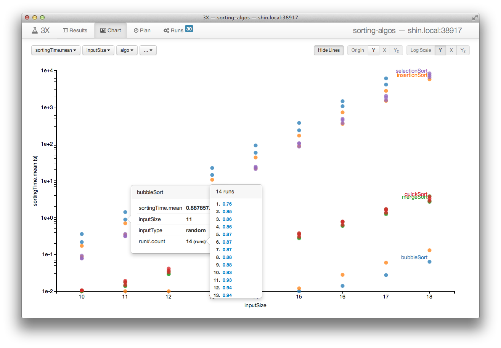
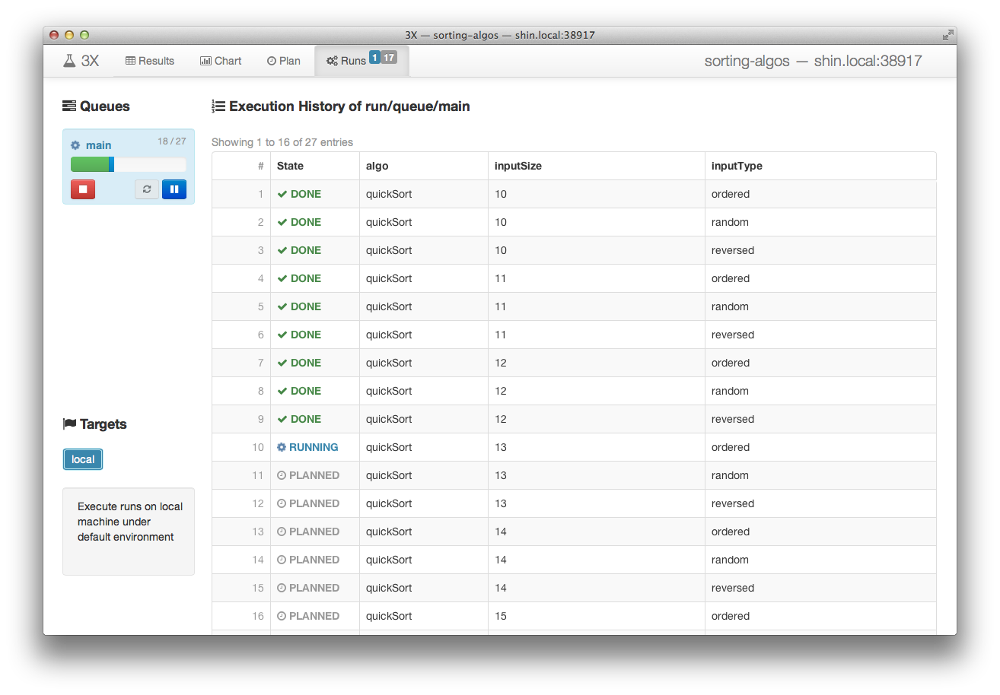
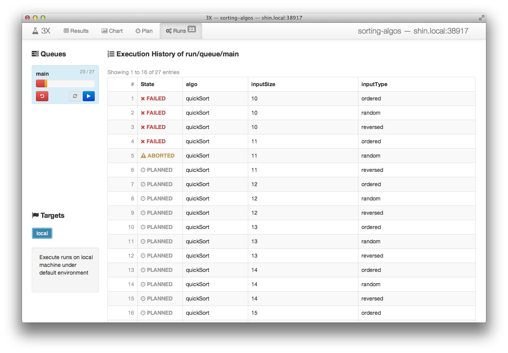

3X Tutorial: Step-through Examples
In this document, we explain how you can setup and conduct computational experiments using a few examples. This step-by-step guide will introduce important features of 3X with detailed instructions.
Example 1: Studying Sorting Algorithms

Anyone who received computer science education or studied basic algorithms would be familiar with different algorithms for sorting an array of data values. In the algorithms textbook, we learn how to analyze time and space complexities of such algorithms in terms of their asymptotic behavior. Theoretical analyses of worst or best cases can be covered clearly in text, but average cases require empirical studies experimenting with actual implementations.
Suppose we want to see such an empirical result ourselves of how different sorting algorithms, namely, bubble sort, selection sort, insertion sort, quick sort, and merge sort behave on several sizes and types of inputs, e.g., when the input is already ordered, reversed, or randomly shuffled. Implementing these algorithms correctly is obviously important, but what's equally important to obtain a credible result is running different combinations of inputs and recording every detail in a systematic manner. Using 3X, we can easily obtain robust, repeatable experimental results with minimal effort. Therefore more of our time and energy can be devoted to exploring the parameter space as well as writing the program correctly, which leads our experiments to yield more interesting results and less errors.
1. Write the Program
First of all, we need to write a program that implements the sorting algorithms we want to test. Some people may prefer using a serious programming language, such as C, C++, or Java to write an efficient implementation. Others may use simpler scripting languages, such as Python, Ruby or Perl for a quick evaluation. But in the end, there will always be an executable file, or a command and a list of arguments to start our program regardless of the programming language of choice. This is the only thing 3X needs to know about the program for our experiment, and we will see where this information should be placed after we create an experiment repository in the following step.
To keep this tutorial simple, let's assume we already wrote Python code for experimenting with sorting algorithms as following two files:
sort.pycontaining each sorting algorithm as a separate Python function.measure.pycontaining code that measures how long a chosen sorting algorithm takes to finish for a generated input.
To obtain a single measurement with this program, we would a run command such as:
python measure.py quickSort 10 randomwhich outputs, for instance:
ratio sorted: 1.0
sorting time (s): 0.009179
verification time (s): 0.000225
input generation time (s): 0.000580
number of compares: 11440
number of accesses: 307352. Create and Setup an Experiment Repository
In order to keep everything related to our experiment well organized, we need to tell 3X to create a new experiment repository for us. Every detail from the definition of input/output and program to the individual records of past executions and plans for future runs will be stored and managed inside this repository. It is a typical directory (or folder) on the filesystem with a special internal structure.
3X provides two different ways to setup a new experiment repository: a quick
one-liner setup, or a slightly more lengthy step-by-step way. The quick setup
will be useful for creating entirely new experiments from scratch, while the
step-by-step setup can be useful for adjusting your existing experiment
definitions. You can either follow the first "Quick Setup" section and skip
the rest, or follow the individual steps introduced in the sections that
follows "Quick Setup". In either ways, let's say we want our repository to be
called sorting-algos.
Quick Setup
The single command shown below will create and setup a new repository for our experiment on sorting algorithms. It is simply an abbreviation for the multiple steps necessary to initialize the experiment repository and define its input and output.
# create and setup a new experiment repository
3x setup sorting-algos \
--program \
'python measure.py $algo $inputSize $inputType' \
--inputs \
inputSize=10,11,12,13,14,15,16,17,18 \
inputType=random,ordered,reversed \
algo=bubbleSort,selectionSort,insertionSort,quickSort,mergeSort \
--outputs \
--extract 'sorting time \(s\): {{sortingTime(s) =~ .+}}' \
--extract 'number of compares: {{numCompare =~ .+}}' \
--extract 'number of accesses: {{numAccess =~ .+}}' \
--extract 'ratio sorted: {{ratioSorted =~ .+}}' \
--extract 'input generation time \(s\): {{inputTime(s) =~ .+}}' \
--extract 'verification time \(s\): {{verificationTime(s) =~ .+}}' \
#Note that since this quick setup command creates only the skeleton part of our
experiment repository, we still need to place additional files at the right
place, namely, the .py files of our program. Refer to the instructions for
plugging the program in to 3X (§2.3) to prepare the program/
directory. You can safely ignore the rest of the steps, since they were
already taken care by the 3x setup command above. We'll all set to start
running our experiment.
2.1. Create an Experiment Repository
The following command creates an empty repository:
3x init sorting-algosWe can now move into the repository to further define our experiment.
cd sorting-algos2.2. Define Inputs & Outputs
Next, we shall tell 3X what are the input parameters to our experimental program, and the output values of interest.
Suppose we want to vary the input size, the initial order of input for different sorting algorithms. We can tell 3X that we have three input parameters for our experiment in the following steps.
Input 1. algo for choosing the sorting algorithm to test
The particular sorting algorithms we are interested in are the following
five, which are already implemented in sort.py. We will use the name
of the algorithms as the value for this input parameter.
bubbleSortfor Bubble SortselectionSortfor Selection SortinsertionSortfor Insertion SortquickSortfor Quick Sort (in-place version)mergeSortfor Merge Sort (bottom-up implementation)
The following command tells 3X to add this parameter to the experiment definition:
3x define input algo bubbleSort selectionSort insertionSort quickSort mergeSort Input 2. inputSize for choosing the size of the array to sort
We want to test sorting algorithms on arrays of numbers with different sizes. We will start with arrays of 1,024 (210) unique numbers, and double the size of the arrays up to size 262,144 (218). Let's omit the base and use the powers of two as the value for this input parameter:
10for 210,11for 211,- ...,
18for 218.
We should run the following command to add this parameter:
3x define input inputSize 10 11 12 13 14 15 16 17 18Input 3. inputType for choosing the type of the arrays to sort
We also want to see how each sorting algorithm behaves differently for different types of arrays as well as their sizes. We will use the following three values of this input parameter to indicate which type of input we want to use:
orderedthat is already sorted,reversedthat is sorted but in the reversed direction,randomthat is shuffled randomly.
The following command will add this last parameter:
3x define input inputType ordered reversed randomNext, suppose we want to measure the wall clock time as well as the number of compares and array accesses to finish each sorting algorithm. We can tell 3X to look for lines that match specific patterns in the output of our program to extract the values of interest. These patterns can be specified in Perl regular expressions syntax. The following steps will show how exactly we can tell 3X to extract the values of interest in the case of this experiment with sorting algorithms.
Output 1. sortingTime
The wall clock time it takes for sorting the input array is what we are
mostly interested in this experiment. We measure this time in our program
in seconds and print that out in a line that begins with sorting time (s):. Therefore 3X can easily extract the value that follows if we define the
output variable as shown in the following command:
3x define output 'inputTime(s)' extract 'sorting time \(s\): ' '.+' ''Here, there are four arguments to the 3x define output command:
- name of the output variable:
inputTime(s) - regular expression for the text that comes before the value:
sorting time \(s\): - regular expression the value matches:
.+(any non-empty string) - regular expression for the text that comes after the value: (empty string)
Note that we can append the unit of the output variable to its name
(first argument), which is (s) or seconds in this case. We can use any
text for the unit as long as it's surrounded by parentheses.
Output 2. numCompare
Similarly, we can teach 3X to extract the number of compares for the value of an output variable using the following command:
3x define output 'numCompare' extract 'number of compares: ' '.+' ''Output 3. numAccess
As well as the number of accesses to the input array of numbers with:
3x define output 'numAccess' extract 'number of accesses: ' '.+' ''Output 4. ratioSorted
To ensure correctness, note that we compute the ratio of the numbers in the array that are correctly ordered to the array size, after finishing the sorting algorithm. This is a simple measure to easily check whether the sorting algorithm was implemented correctly. When this value comes out less than 1.0, it means the the algorithm is incorrect. The following command adds this output variable to the experiment definition.
3x define output 'ratioSorted' extract 'ratio sorted: ' '.+' ''Output 5. inputTime
We also record the wall clock time that took for generating the input array to sort.
3x define output 'inputTime(s)' extract 'input generation time \(s\): ' '.+' ''Output 6. verificationTime
And the wall clock time that took for checking whether the output array is correctly sorted.
3x define output 'verificationTime(s)' extract 'verification time \(s\): ' '.+' ''2.3. Plug in the Program
The only thing 3X needs to know about our program in order to run experiments
on behalf of us is the exact command we type into our terminal to start them
ourselves. 3X assumes this information is kept as an executable file named
run under the program/ directory of the experiment repository. For
each execution of run, 3X sets up the environment correctly, so that the
value chosen for each input variable we defined earlier can be accessed via the
environment variable with the same name. 3X will also make sure any additional
files that are placed next to the run executable will also be available in
the current working directory while execution.
First, let's move into the program/ directory of our repository:
cd programAs we have two Python files necessary for implementing and measuring the
sorting algorithms, we will put both of these files under program/. If you
don't have these files readily available, let's download them directly from
GitHub with the following commands:
# copy our example Python program into the repository
exampleURL="https://raw.github.com/netj/3x/master/docs/examples/sorting-algos"
curl -LO $exampleURL/program/measure.py
curl -LO $exampleURL/program/sort.py(You can probably use wget instead of curl -LO if your system doesn't have
curl installed.)
Next, we need to create a run script that starts our Python program as
follows:
cat >run <<EOF
#!/bin/sh
python measure.py $algo $inputSize $inputType
EOF
chmod +x runNow, we're all set to start running our experiment.
3. Running Experiments
3X provides two ways to execute your experiments: You can use its graphical user interface (GUI), or the command-line interface (CLI). The GUI is easy and intuitive to use, but you might want to have more sophisticated control over your execution, or control 3X from other systems and further automate parts of your experiment using the CLI. However, it is perfectly fine for you to use both GUI and CLI at the same time, and any changes you make on one-side will be reflected to the other.
3.1. Start GUI
To start the GUI, run the following command within the experiment repository:
3x guiWhen successfully started, it will output a URL you can open in your web browser to access the GUI. On a Mac, or a GNU/Linux system running a proper GUI system, 3X will launch the browser for you.

As shown in the above screenshot, the GUI has four tabs: Results, Charts, Plan, and Runs. The first two tabs are for exploring the results of execution collected so far, while the last two are for controlling the execution.
3.2. Queue Runs
From the results table, we can click on a row which needs to be filled or more execution should be done, and queue up new runs for execution. You can repeat this process from the results table to add necessary runs to fill the output columns colored red. Note that the button on each input column header can be used to expand and collapse the rows, so that you can add only part of the runs or a larger group of runs at a time.

Queue Runs from Command Line
From the command line, within the experiment repository, the following command will achieve the same result as we did in the GUI:
3x plan algo=quickSortDifferent sets of runs can be easily queued with commands similar to the following:
3x plan algo=bubbleSort,insertionSort inputSize=10,11,123.3. Start Runs
The Runs tab shows a list of queues defined in the repository and the target execution environment associated to them on the left-hand side. On the right-hand side table, all the runs added to the currently selected queue are shown with their states and value bindings for input variables in the order they will be executed.

The buttons on the queue from the left-hand side list will let you to start and stop the execution of the runs in it. Pressing the play button on the main queue starts the execution.
Start Runs from Command Line
From the command line, you can run the following command to view what runs are in the current queue:
3x statusIt will output the table of runs in the current queue that resembles the GUI as follows:
PLANNED algo=quickSort inputSize=10 inputType=ordered #1
PLANNED algo=quickSort inputSize=10 inputType=random #2
PLANNED algo=quickSort inputSize=10 inputType=reversed #3
PLANNED algo=quickSort inputSize=11 inputType=ordered #4
[...]
PLANNED algo=quickSort inputSize=18 inputType=random #26
PLANNED algo=quickSort inputSize=18 inputType=reversed #27To start execution, run:
3x start3.4. Stop Runs
To stop the execution, press the pause or stop button on the main queue.
Stop Runs from Command Line
To stop execution from the command line, either interrupt the 3x start
process with Ctrl-C, or run the following command:
3x stop3.5. Monitor Progress
As execution progresses, the state of runs will change from PLANNED to
RUNNING, then to either DONE or FAILED after finishing.

Monitor Progress from Command Line
From the command line, you can use the same command to view the state of runs in the current queue:
3x statusIt will output the table of runs with updated states:
DONE algo=quickSort inputSize=10 inputType=ordered #1 local run/2013/1001/01/1836.424138000-1
DONE algo=quickSort inputSize=10 inputType=random #2 local run/2013/1001/01/1839.494897000-2
DONE algo=quickSort inputSize=10 inputType=reversed #3 local run/2013/1001/01/1841.888092000-3
DONE algo=quickSort inputSize=11 inputType=ordered #4 local run/2013/1001/01/1844.200499000-4
DONE algo=quickSort inputSize=11 inputType=random #5 local run/2013/1001/01/1846.514245000-5
[...]
PLANNED algo=quickSort inputSize=18 inputType=random #26
PLANNED algo=quickSort inputSize=18 inputType=reversed #273.6. Trace Failures
If your program does not finish with clean (zero) exit status, or any error
occurs, their states become FAILED. For example, if you forget to plug the
.py files into the program/ directory, all runs fail as shown in the
following screenshot. Additionally, if you stop the execution, runs can be
marked as ABORTED.

By following the link of a run in the state column (FAILED, DONE, or
ABORTED) of the execution history table, it is possible to access the full
record of the execution.

3.7. Switch Target
...
3x target -h4. Viewing Results and Beyond
4.1. Tabulate Results
...
4.2. Chart Results
...
Example 2: Simulating Network Formations
...